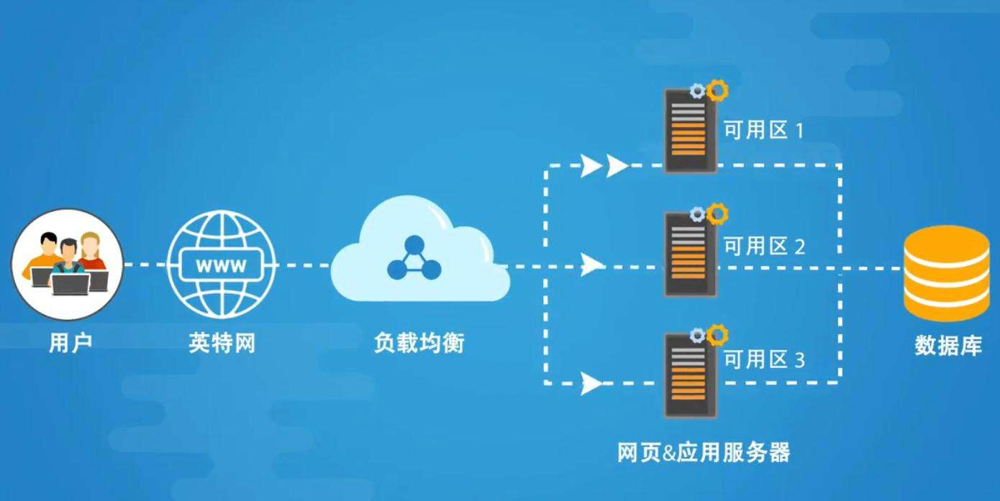
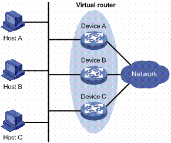
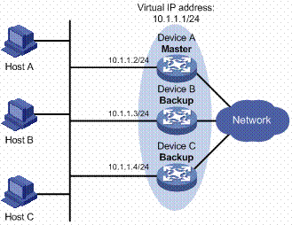
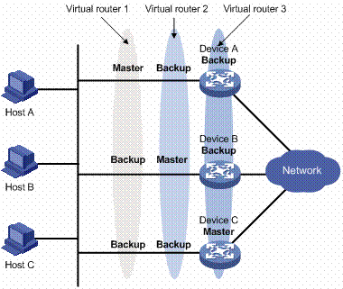

纸上得来终觉浅，绝知此事要躬行。

1. 软件介绍
keepalived 是基于 VRRP 协议的软件，其原发起是为了解决 LVS 的 HA 问题而衍生的一个软件，所以其对 LVS 支持比较好，目前和其他软件像 Nginx、Haproxy、MySQL 等也可以比较好的结合。主要实现的功能是作 RealServer 的健康状态检查以及 LoadBalance 主机和 BackUP 主机之间 failover。其可以实现基于端口、基于 hash 值、基于页面返回码或自定义方式的后端健康检测。
集群介绍
- LB 集群
- 轻量级：
nginx - 重量级：
lvs
- 轻量级：
- HA 集群
- 轻量级：
keepalived - 重量级：
heartbeat、corosync、cman
- 轻量级：
- HP 集群
- 超算集群企业很少使用
Keepalived 的特点
Keepalived 在 CentOS6.4 就已经收入发行版了，搭配上 LVS 使其具有自动生成 ipvs 规则和对各 RS 做健康状态检测的功能，更加完美。
vrrp协议在Linux主机上以守护进程方式的实现；- 能够根据配置文件自动生成
ipvs规则； - 对各
RS做健康状态检测；
1.1 软件架构
从 kernel 空间来看，其主机分为 ipvs 模块与 netlink 模块两部分。netlink 主要实现各种网络功能及 vrrp 的实现，ipvs 模块主要实现 lvs ipvs 功能 。其在启动的时候会生成三个进程。一个主进程，fork 两个子进程，其中一个为 VRRP 子进程，另一个为后端健康检查 。

PID 111 Keepalived <-- Parent process monitoring children
112 \_ Keepalived <-- VRRP child
113 \_ Keepalived <-- Healthchecking child
1.2 难点问题

- 节点间的资源强占
资源存储分为结构化数据和非结构化数据，结构化数据可以存储在 MySQL 等数据库上，而非结构化数据只能存储在文件系统上。我们知道 MySQL 等数据库支持高并发以及连接管理等功能，而对于文件系统，则会涉及到挂载、读写等操作。
如果此时我们对请求调度的节点进行高可用，用户名密码(结构化数据)等信息可以存储在 MySQL 数据库中，而图片(非结构化数据)则需要共享存储或同步方案进行存储。同步方案只能作为较小场景的备用方案，而且还不一定实时同步。而对于共享存储，则可以通过使用一个具有并发访问控制能力的分布式存储就能很好的解决问题，其实也可以使用一般的文件系统，如 nfs、samba 等。
当我们部署高可用的时候，势必会有会话保持的问题。如果 VIP 在两个或多个节点来回的强占，则会导致其 LVS 维持的会话表失效。合理的解决方式就是，一旦活动节点失效，备用节点代替，之后即使活动节点上线也只能做备用节点了。
- 节点间的心跳监测
如果我们在高可用服务商部署了多个节点，如果同一时间节点间都发送健康状态信息，则会很消耗网络带宽的。可以让这些健康状态信息，分批次的发送来解决这个问题。
还有就是，在多个节点中不能使用广播进行健康状态的通知，会影响整个域内的所有主机。所有需要使用多播或者组播，将多个高可用节点定为一个组播，信息只在其中传递。
- 节点间的时间同步
任何一个需要多主机共同协作的系统，都需要进行时间的同步，保持收到信息的实时性。如备用节点收到了来自活动节点的健康状态信息，但是时间为 1 分钟之前的，所有就很难判断现在的健康状态。这时我们就需要使用 Linux 常见的 ntp 服务，在 CentOS7 中则使用效率更为好的 Chrony 服务。
如果我们发现有一个节点比 NTP 服务器满了 10 分钟，则调表过程不能直接调整到 NTP 服务器的时间，会导致那段时间短片了。应该慢调整，在几分钟之内逐渐调整到 NTP 的时间。
1.3 故障切换
Keepalived高可用故障切换转移原理，下面说的是竞争模式。
Keepalived 高可用服务对之间的故障切换转移，是通过 VRRP(虚拟路由器冗余协议)来实现的。VRRP 的出现就是为了解决静态踣甶的单点故障问题，VRRP 是通过一种竞选机制来将路由的任务交给某台 VRRP 路由器的。
在 Keepalived 服务正常工作时，主 Master 节点会不断地向备节点发送(多播的方式)心跳消息，用以告诉备 Backup 节点自己还活看，当主 Master 节点发生故障时，就无法发送心跳消息，备节点也就因此无法继续检测到来自主 Master 节点的心跳了，于是调用自身的接管程序，接管主 Master 节点的 IP 资源及服务。而当主 Master 节点恢复时，备 Backup 节点又会释放主节点故障时自身接管的 IP 资源及服务，恢复到原来的备用角色。
2. VRRP 协议
VRRP是一种容错协议，它保证当主机的下一跳路由器出现故障时，由另一台路由器来代替出现故障的路由器进行工作，从而保持网络通信的连续性和可靠性。
2.1 相关术语
注意：一个物理路由器可以构建出多个虚拟路由器，而虚拟路由器可以包含多个物理路由器。
| 相关术语 | 对应解释 |
|---|---|
| 虚拟路由器 | 由一个 Master 路由器和多个 Backup 路由器组成；主机将虚拟路由器当作默认网关 |
| VRID | 虚拟路由器的标识；有相同 VRID 的一组路由器构成一个虚拟路由器 |
| Master 路由器 | 虚拟路由器中承担报文转发任务的路由器 |
| Backup 路由器 | Master 路由器出现故障时，能够代替 Master 路由器工作的路由器 |
| 虚拟 IP 地址 | 虚拟路由器的 IP 地址；一个虚拟路由器可以拥有一个或多个 IP 地址 |
| 虚拟 MAC 地址 | 一个虚拟路由器拥有一个虚拟 MAC 地址；虚拟 MAC 地址的格式为00-00-5E-00-01-{VRID}，数量介于[0-255]之间；通常情况下，虚拟路由器回应 ARP 请求使用的是虚拟 MAC 地址，只有虚拟路由器做特殊配置的时候，才回应接口的真实 MAC 地址 |
| 优先级 | VRRP 根据优先级来确定虚拟路由器中每台路由器的地位 |
| 非抢占方式 | 如果 Backup 路由器工作在非抢占方式下，则只要 Master 路由器没有出现故障，Backup 路由器即使随后被配置了更高的优先级也不会成为 Master 路由器 |
| 抢占方式 | 如果 Backup 路由器工作在抢占方式下，当它收到 VRRP 报文后，会将自己的优先级与通告报文中的优先级进行比较。如果自己的优先级比当前的 Master 路由器的优先级高，就会主动抢占成为 Master 路由器；否则，将保持 Backup 状态 |
2.2 工作过程

VRRP 的工作过程：
- (1) 虚拟路由器中的路由器根据优先级选举出
Master。Master路由器通过发送免费ARP报文(自问自答)，将自己的虚拟MAC地址通知给与它连接的设备或者主机，从而承担报文转发任务； - (2)
Master路由器周期性发送VRRP报文，以公布其配置信息(优先级等)和工作状况； - (3) 如果
Master路由器出现故障，虚拟路由器中的Backup路由器将根据优先级重新选举新的Master； - (4) 虚拟路由器状态切换时，
Master路由器由一台设备切换为另外一台设备，新的Master路由器只是简单地发送一个携带虚拟路由器的MAC地址和虚拟 IP 地址信息的免费ARP报文(自问自答)，这样就可以更新与它连接的主机或设备中的ARP相关信息。网络中的主机感知不到Master路由器已经切换为另外一台设备； - (5)
Backup路由器的优先级高于Master路由器时，由Backup路由器的工作方式(抢占方式和非抢占方式)决定是否重新选举Master；
VRRP 需要实现以下功能：
Master路由器的选举；Master路由器状态的通告；- 为了提高安全性，
VRRP还提供了认证功能；
2.3 认证方式
- 无认证
- 不进行任何
VRRP报文的合法性认证，不提供安全性保障。
- 不进行任何
- 简单字符认证（最常使用）
- 在一个有可能受到安全威胁的网络中，可以将认证方式设置为简单字符认证。发送
VRRP报文的路由器将认证字填入到VRRP报文中，而收到VRRP报文的路由器会将收到的VRRP报文中的认证字和本地配置的认证字进行比较。如果认证字相同，则认为接收到的报文是合法的VRRP报文；否则认为接收到的报文是一个非法报文。
- 在一个有可能受到安全威胁的网络中，可以将认证方式设置为简单字符认证。发送
- MD5 认证（加解密需要消耗性能）
- 在一个非常不安全的网络中，可以将认证方式设置为
MD5认证。发送 VRRP 报文的路由器利用认证字和MD5算法对VRRP报文进行加密，加密后的报文保存在Authentication Header(认证头)中。收到VRRP报文的路由器会利用认证字解密报文，检查该报文的合法性。
- 在一个非常不安全的网络中，可以将认证方式设置为
2.4 核心难点
虚拟 MAC 地址
- 【问题描述】
- 两个路由器同时工作时，主路由器失效了，会将其上的
VIP转给备用路由器，但是物理MAC地址还保留在第一台路由器上，后端服务器有可能将信息传递给失效的主路由器。
- 两个路由器同时工作时，主路由器失效了，会将其上的
- 【方法一】可以做
ARP欺骗(自问自答)- 备用路由器在组播内询问主路由器的地址是什么，然后自己回答，之后组播内的其他服务也更新对于的
MAC地址转换表，得知主路由器的地址为备用路由器的MAC地址。
- 备用路由器在组播内询问主路由器的地址是什么，然后自己回答，之后组播内的其他服务也更新对于的
- 【方法二】第二
VMAP技术- 我们这里使用的技术都是虚拟技术，将虚拟路由器的
VIP和MAC地址，在主路由器失效的时候，同时转移到备用路由器上。这里还是需要使用ARP欺骗，因为最终通信还是需要用到物理MAC地址。
- 我们这里使用的技术都是虚拟技术，将虚拟路由器的
地址流动
是否需要地址流动
- 内网
IP地址是否需要流动根据负载均衡使用的场景来做决定
- 内网
流动的示例
- 示例：对于
LVS的NAT模型就需要进行内外网IP地址的同时流动； - 原因：因为所有
Real server需要响应给CIP而不是DIP，即内网主机需要将网关指向调度的内网IP地址，所以就必须要指定网关
- 示例：对于
不流动的示例
- 示例：对于
Nginx来说，如果调度服务器的内网IP地址和各Real server在同一网段，则不需要流动。如果不在同一网段，也不需要，一般有地址就可以了。做的话会好点，还有 LVS 的 DR 模型也不需要 内网IP地址的流动。 - 原因：因为真正发送请求的是
Nginx服务器本身，所有Real server只需响应给Nginx服务器就可以了，不需要指定网关地址。
- 示例：对于
3. 组网案例
讲几个
VRRP的使用实例
3.1 主备模型
主备模型表示业务仅由Master路由器承担。当Master路由器出现故障时，才会由选举出来的Backup路由器接替它工作。

初始情况下，Device A是Master路由器并承担转发任务，Device B和Device C是Backup路由器且都处于就绪监听状态。如果Device A发生故障，则虚拟路由器内处于Backup状态的Device B和Device C路由器将根据优先级选出一个新的Master路由器，这个新Master路由器继续为网络内的主机转发数据。
3.2 双主模型
- 工作方式
在路由器的一个接口上可以创建多个虚拟路由器，使得该路由器可以在一个虚拟路由器中作为Master路由器，同时在其他的虚拟路由器中作为Backup路由器。
负载分担方式是指多台路由器同时承担业务，因此负载分担方式需要两个或者两个以上的虚拟路由器，每个虚拟路由器都包括一个Master路由器和若干个Backup路由器，各虚拟路由器的Master路由器可以各不相同

有三个虚拟路由器存在：
- 虚拟路由器 1：
Device A作为Master路由器，Device B和Device C作为Backup路由器。 - 虚拟路由器 2：
Device B作为Master路由器，Device A和Device C作为Backup路由器。 - 虚拟路由器 3：
Device C作为Master路由器，Device A和Device B作为Backup路由器。
为了实现业务流量在Device A、Device B和Device C之间进行负载分担，需要将局域网内的主机的默认网关分别设置为虚拟路由器 1、2 和 3。在配置优先级时，需要确保三个虚拟路由器中各路由器的VRRP优先级形成一定的交叉，使得一台路由器尽可能不同时充当2个Master路由器。
- 要点说明
如果使用了双主模型的话，用户请求是通过公网地址VIP介入的，把两个节点当做是负载均衡的入口。因此负载均衡效果是通过DNS的A记录实现的，虽然DNS的解析效果不太好。